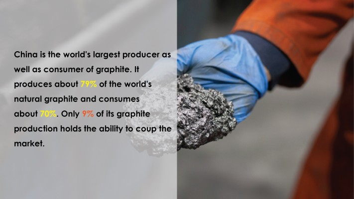
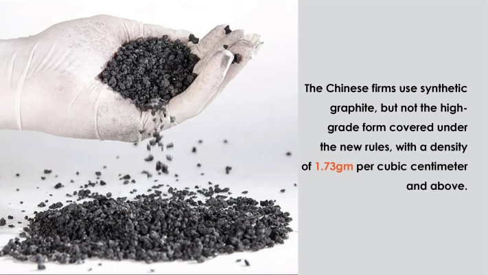
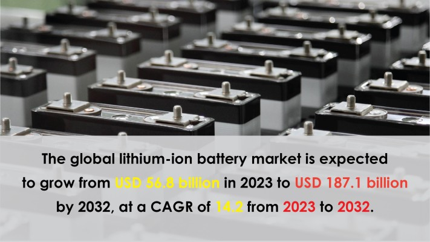

A recent news piece about China’s export restriction that Reuters reported forced the industry to reckon the cost of Lithium Ion batteries. This time, China has drawn out cards to stop feeding the world with natural resources that it used to. There are two ways to put out a fire, one is to cut heat and oxygen while the other is to stop the fuel. As energy industries are growing like forest fires in developing countries, China is back again in its form to hinder growth. It started to implement rules and laws to do its best to put out this fire. Today, we will learn about how this strategy to hinder the graphite supply impacts the world.
The news I was talking about in the initial part of this article is that China decided to restrict its graphite exports. The official statement for this decision was similar to what has been given to other such policies being “to protect national security and ensure the supply of graphite for domestic industries”.
Relation Between Graphite and China
Graphite is the key material for multiple industries including lithium-ion batteries. China is the world's largest producer as well as consumer of graphite. It produces about 79 percent of the world's natural graphite and consumes about 70 percent. Only Nine percent of its graphite production holds the ability to coup the market.
As the world is looking for fossil fuel substitutes for transportation and electricity has come up as the closest solution, another big thing is making batteries for electric vehicles. This mobility shift has given rise to a number of countries making electric cars but China has created hardship for all the aspiring countries. This step not only preserves the monopoly of China on the global front but also helps eliminate competitors.

The world now will be divided into two parts; one accepting China’s feat and waiting for its concessions and the other will look for different materials to tackle this shortage.
The one looking for other materials are providers are a challenge for China’s global monopoly on Graphite production. Still, using such tactics to kill the competition is something that is not only unethical but inhumane. Let’s uncover in which direction will the world go after these graphite curbs
Quest for Another Sources
The answer to this export limitation by China lies in the basic consumer tendency to buy products from other shops to avoid price hikes. Global consumers of graphite, whether for batteries or other industries, shall look for other providers. This again reminds us that over-dependence on one player for any of the crucial materials for any industry may lead to a lot of havoc. Countries most affected by these rules are the United States, Japan, and South Korea, as they are heavily reliant on imported graphite.
Hunting Different Anode Material
Whether these new rules completely choke the supply from China or limit the amount of graphite being put in the supply chain, players in electric mobility have to look for other anode materials. Looking for substitutes will enable companies to innovate never like they thought before.
This is not the first time China has taken such step. Earlier, we have seen things like the forceful requirement of export permits for gallium and germanium products that created a demand and supply shortage of chipmaking metals.
The Forced Synthesis

Every bad news is good news if you have the perspective to see it. Another perspective for this new restriction from China’s is that it will develop new possibilities for the world. Although, it is very hard to gather information from Chinese firms without the government knowing, there are cues that this restriction will not impact as bad as reckoned. The Chinese firms use synthetic graphite, but not the high-grade form covered under the new rules, with a density of 1.73 grams per cubic centimeter and above.
Impact on India
Any export restrictions on raw materials cause problems on two fronts. One is on the importer side (engaged as a producer) and the other is on the market side. India being both can not be agnostic about the havoc created by this. The effects will be both immediate and long-lasting, as companies that depend on graphite supplies will have to find other suppliers or risk operations being disrupted by shortages of the material and increased costs as a result. Furthermore, even though some nations, like India, might be able to achieve some level of self-sufficiency, this does not account for the expenses or time needed for production lines to begin operating.
Weakening Market
In a recent development, the biggest provider of Lithium for Electric Vehicle Batteries, Albemarle Corporation, has warned it could lose market share to Chinese producers due to plunging lithium prices.

"We're being a little more cautious and investing behind the market, so there's a risk we lose that share," the CEO told the media. "This will probably be helpful for Chinese suppliers."
However, The global lithium-ion battery market is expected to grow from USD 56.8 billion in 2023 to USD 187.1 billion by 2032, at a CAGR of 14.2 from 2023 to 2032. The growth of the market is attributed to the increasing demand for lithium-ion batteries in electric vehicles, consumer electronics, and energy storage systems.
It would be interesting to see how the market turns in the upcoming months.